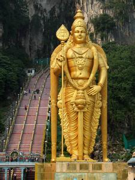
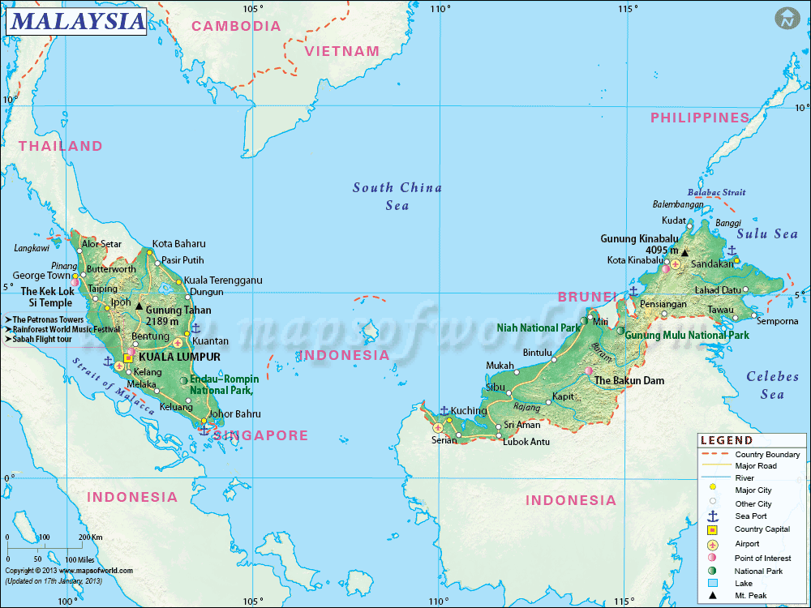
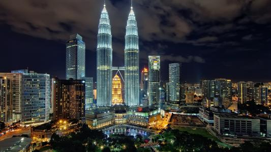

Malaysia is the 66th largest country by total land area, with a land area of 329,613 km2 (127,264 sq mi). It has land borders with Thailand in West Malaysia, and Indonesia and Brunei in East Malaysia.
It is linked to Singapore by a narrow causeway and a bridge. The country also has maritime boundaries with Vietnam and the Philippines.The land borders are defined in large part by geological features such as the Perlis River, the Golok River and the Pagalayan Canal, whilst some of the maritime boundaries are the subject of ongoing contention.
Brunei forms what is almost an enclave in Malaysia,with the state of Sarawak dividing it into two parts. Malaysia is the only country with territory on both the Asian mainland and the Malay archipelago.Tanjung Piai, located in the southern state of Johor, is the southernmost tip of continental Asia.The Strait of Malacca, lying between Sumatra and Peninsular Malaysia, is one of the most important thoroughfares in global commerce, carrying 40 per cent of the world's trade.
Peninsular Malaysia, containing 40 per cent of Malaysia's land area,[125] extends 740 km (460 mi) from north to south, and its maximum width is 322 km (200 mi).[128] It is divided between its east and west coasts by the Titiwangsa Mountains,[129] rising to a peak elevation of 2,183 metres (7,162 ft) at Mount Korbu,[130] part of a series of mountain ranges running down the centre of the peninsula.
Malaysia is a federal constitutional monarchy located in Southeast Asia. It consists of thirteen states and three federal territories and has a total landmass of 330,803 square kilometres (127,720 sq mi) separated by the South China Sea into two similarly sized regions, Peninsular Malaysia and East Malaysia (Malaysian Borneo).
Malaysia is a federation of 13 states and three federal territories.These are divided between two regions, with 11 states and two federal territories on Peninsular Malaysia and the other two states and one federal territory in East Malaysia. Each state is divided into districts, which are then divided into mukim. In Sabah and Sarawak districts are grouped into divisions.[".
Malaysia is the only country with territory on both the Asian mainland and the Malay archipelago.Tanjung Piai, located in the southern state of Johor, is the southernmost tip of continental Asia. The Strait of Malacca, lying between Sumatra and Peninsular Malaysia, is one of the most important thoroughfares in global commerce, carrying 40 per cent of the world's trade.
Approximately 61.3% of the population practice Islam, 19.8% practice Buddhism, 9.2% Christianity, 6.3% Hinduism and 1.3% practice Confucianism, Taoism and other traditional Chinese religions. 0.7% declared no religion and the remaining 1.4% practised other religions
